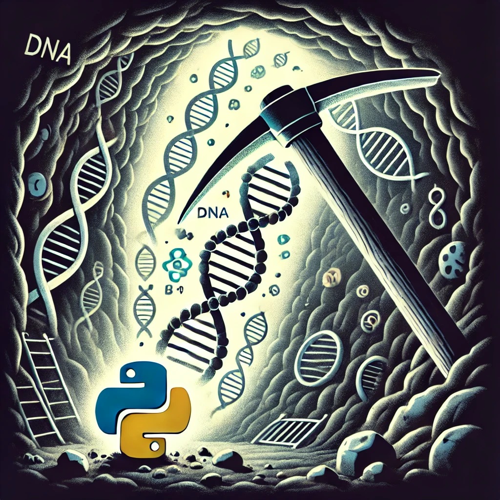

balance_resample()
boruta_selection()
exprs_cv()
gene_gini_coeff()
hkg_selection_ga()
pooled_tost()
sclustering_cv_stb_gini()
set_balance_resample()
set_boruta_selection()
stability_cv()
tost()
uclustering_cv_stb_gini()
plot_corr()
plot_stb_cv_gini()
MRN_transformer
MRN_transformer.fit()
MRN_transformer.transform()
TMM_transformer
TMM_transformer.fit()
TMM_transformer.transform()
create_groups()
log_transform()
mrn()
mrn_norm_factors()
tmm()
tmm_norm_factors()
transform_exprs()
transform_exprs_Microarray()
transform_exprs_RNAseq()

Contents: